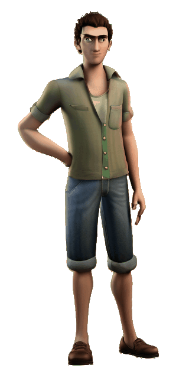

Player Walk — Articulated BVH
Exactly one looping GIF. Every diffusion/video-generated walk and every earlier inspector GIF was deleted.
No model generates these frames. One immutable reviewed player image is semantically split into rigid head, torso, upper/lower arm and upper/lower leg layers. A real BVH motion-capture walk drives exact-length limbs and two-link leg inverse kinematics; the head and torso never deform, and the alpha source is fixed rather than regenerated per frame.
The actual image seam is 1.003× a normal transition, the worst internal transition is 1.656× normal, and both visual reviews passed at 95%.
Open the GIF directly · Manifest, provenance and all gates
Checkerboard

Dark background
Light background
- Engine
- semantic rigid-part articulated sprite with BVH motion capture
- Frame-generation model
- none
- Frames
- 32
- Dimensions
- 512 × 768
- Frame duration
- 50 ms
- Loop
- infinite
- SHA-256
beb66e7136775e64ad74ee6a051c825f09c7dd3dae6485634a4cb7c6616cefea- Rigid head hashes
- 1
- Loop seam / internal maximum
- 1.003× / 1.656× normal transition
- Stance-foot drift
- left 0.000000/0.000000 px, right 0.000000/0.000000 px
- DWPose gait
- 17 of 17 joints every frame; 2 support exchanges
- Alpha
- border 0.000, soft-edge minimum 0.017, connected silhouette 0.9979
- Motion review
- natural=True, planted=True, seamless=True, sliding=False, torso stretch=False
- Face/edge review
- face identical=True, noise=False, blur=False, gaps=False, sparkle=False, halo=False